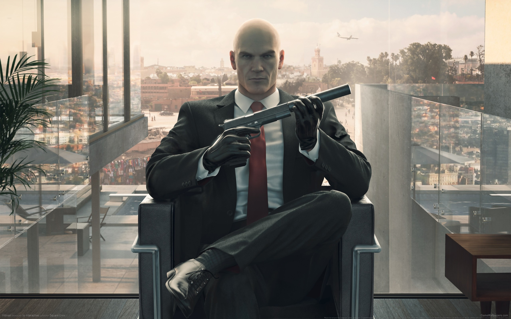

Игра начинается с пролога, в котором действия разворачиваются за 20 лет до событий самой игры, с момента, когда Агент 47 только начал работать на ICA, где он знакомится со своим будущим связным — Дианой Бернвуд. Агенту предлагают пройти в огромном тайном комплексе ICA в Гренландии тренировочную миссию. Несмотря на исключительные показатели и великолепную подготовку агента, директор ICA Эрих Содерс настроен враждебно по отношению к нему — о прошлом нового агента ничего не известно. Диане Бернвуд приходится многое поставить на кон, чтобы убедить Содерса провести финальное испытание — тренировочную миссию по устранению советского шпиона-перебежчика Джаспера Найта. Прообраз этой миссии в 1980-х годах был успешно выполнен самим Содерсом, который смог проникнуть на территорию советской военной базы на Кубе и убить шпиона. Агент, взявший оперативный псевдоним Сорок Седьмой, с блеском справляется со всеми заданиями и начинает работать на агентство под началом Дианы.
Спустя 20 лет Агенту 47 поручают устранить лидеров тайной организации IAGO — Далии Марголис и Виктора Новикова, занимающихся шпионажем и торговлей секретной информацией под прикрытием модельного агентства. В распоряжение IAGO попали сведения об агентах МИ-6 в Средней Азии. Чтобы не допустить огласки, МИ-6 нанимает ICA для устранения целей на очередном аукционе по продаже информации в Париже. За день до этого Новиков передает все сведения, находящиеся в распоряжении IAGO, неизвестному лицу в обмен на убийство высокопоставленного сотрудника ФСБ и уничтожение компромата на самого Новикова. В момент передачи сведений «Тайный клиент» передаёт сообщение — «опубликовать имена», что приводит к цепочке событий, приведших к устранению лидеров IAGO.
После успешной миссии в Париже, Агент 47 вылетает в курорт Сапиенцу (Италия), где ему предстоит устранить двух учёных — Сильвио Карузо и Франческу де Сантис, и уничтожить прототип вируса избирательного действия, разрабатываемый ими. Спустя неделю после успешного выполнения операции в Йоханнесбурге представитель заказчика, занимаясь расследованием убийства учёных и уничтожения вируса, попадает в засаду «Тайного клиента», который следил за представителем с момента его вылета из Италии. Угрожая пистолетом, он требует некий «ключ». Передавая этот «ключ», представитель предупреждает, что ключ сам по себе бесполезен, и что некая организация под названием «Провидение» выследит его, на что убийца говорит, что другой агент по имени Кобб говорил ему то ж е самое, после чего убивает представителя.
Тем временем, Агент 47 прибывает в Марракеш (Марокко), чтобы устранить мошенника-банкира Клауса Стандберга, укрывающегося от разъярённой толпы в шведском консульстве, и генерала Резу Зейдана, планирующего с помощью средств банкира и под прикрытием беспорядков устроить военный переворот в стране. Убив обе цели, Сорок Седьмой предотвращает заговор в зародыше. Спустя два дня два представителя «Провидения» вскрывают хранилище с активами организации в Нью-Йорке. Они обсуждают смерть агента в Йоханнесбурге и Кобба, у которых были парные ключи к хранилищу, а также неудавшуюся попытку переворота в Марракеше и уничтожение вируса. Один из них приходит к выводу, что данные из хранилища, содержащие информацию о сотрудниках «Провидения», скомпрометированы. Он советует другому, называя его «Директором», готовиться к обороне, так как теперь «Провидение» находится под ударом.
Сорок Седьмой получает новый контракт в Бангкоке (Таиланд). Сын медиамагната и миллиардера Томаса Кросса рок-музыкант Джордан Кросс обвинялся в убийстве своей девушки Анны Хаймур, упавшей с балкона небоскрёба, однако семейный адвокат Кроссов Кен Морган сумел оправдать его в суде за неимением достаточных улик. Семья Хаймур, желая отмщения, заказывает убийство Джордана Кросса и Кена Моргана, находящихся на тот момент в бангкокском отеле. Спустя неделю после исполнения контракта Томаса Кросса похищают, а затем находят мёртвым, а его офшорные банковские счета оказались кем-то опустошены. Диана информирует, что ICA обеспокоено последними контрактами, так как в них прослеживается некий «Тайный клиент», который организовывал утечки информации, впоследствии приводивших к устранению целей контрактов.
ICA выясняет, что утечки были организованы хакером Оливией Холл из ранчо в Колорадо. Этим ранчо владеет эко-террорист Шон Роуз, превративший его в тренировочную базу повстанческой группы. Совет директоров ICA под влиянием Эриха Содерса приказывает устранить Роуза и его полевых командиров, предполагая, что он является тем самым «Тайным клиентом». Устранив все цели, Агент 47 оказывается в командном центре базы и находит, что «Тайный клиент» отслеживал все его контракты на протяжении последних десяти лет. Все цели последних контрактов были связаны с «Провидением», тайной организацией международной элиты. Выясняется, что бывший директор ICA Эрих Содерс является информатором «Провидения» в ICA. Уход Агента 47 из ранчо сопровождает «Тайный клиент», отслеживающий его через прицел снайперской винтовки. Он разговаривает по телефону с Оливией Холл, которая убеждает его убить Сорок Седьмого. Однако «Тайный клиент» в ответ рассказывает историю из своего детства, когда он со своим другом пытался убежать из некоего места, однако их нашли и убили всех, кто помогал им во время побега. Провожая уход Сорок Седьмого, он говорит, что «знает его как никто другой».
ICA получает подтверждение, что Содерс перешёл на сторону «Провидения» в обмен на трансплантацию сердца, осложнённую тем, что Содерс страдает врожденным пороком правостороннего сердца. Операция назначена в сверхсовременной и сверхохраняемой больнице в Хоккайдо (Япония). Чтобы предотвратить компрометацию организации, ICA приказывает устранить Содерса. Агент 47 под именем Тобиаса Рипера, пациента клиники, убивает его и его подручную Юки Ямадзаки, адвоката якудза. После успешного завершения операции происходит встреча Дианы и представителя Провидения в вагоне поезда. Представитель сообщает, что его организации теперь известно о роли ICA в атаке «Тайного клиента» на «Провидение», и предлагает объединить усилия в выслеживании «Тайного клиента». Чтобы подкрепить сделку, он обещает предоставить информацию о прошлом Агента 47, показывая детскую фотографию Сорок Седьмого, показывая тем самым, что «Провидение» знает достаточно об экспериментах Ортмайера. На этом события первого сезона завершаются.